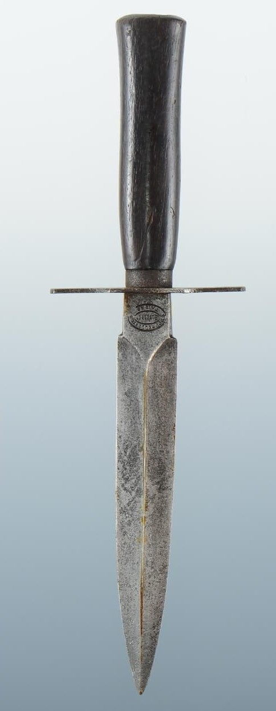

Les armes françaises de la Seconde Guerre mondiale représentent un ensemble varié de modèles issus de plusieurs décennies d’évolution. Entre modernisation rapide, héritage de la Grande Guerre et innovations techniques, l’armement français de 1915 à 1945 reflète une période complexe où coexistent équipements anciens et armes de conception récente.
Cette section du Musée HOP WW2 présente l’ensemble des armes blanches, fusils, pistolets, fusils-mitrailleurs, mitrailleuses et armes d’appui utilisées par les forces françaises durant le conflit. Chaque fiche offre une description détaillée, des photographies, et les éléments permettant d’identifier un modèle authentique.
Le couteau de combat est une arme blanche polyvalente utilisée par certaines unités françaises durant la période 1939–1940. Plus compact qu’un poignard de tranchée, il est conçu pour être porté facilement, utilisé rapidement et adapté aux situations de combat rapproché.
Souvent fabriqués dans des ateliers civils ou militaires, les couteaux de combat présentent une grande variété de formes, mais conservent une même logique : lame solide, poignée ergonomique, fourreau pratique et robustesse maximale.

Le couteau de combat est utilisé par les éclaireurs, les sapeurs, les groupes francs et certaines unités coloniales. Sa petite taille le rend idéal pour les opérations discrètes et les combats rapprochés où la rapidité prime sur la puissance.
Bien que non réglementaire, il est largement toléré et porté par de nombreux soldats, souvent en complément de la baïonnette officielle.